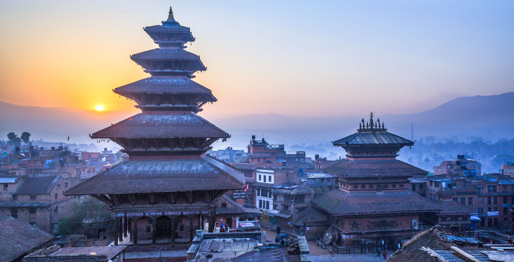

Nepal!
Nepalis a country of contrasts. Spectacular natural riches combine with a vibrant culture and sense of history. Home to ten of the world’s 14 highest mountains, the country offers a magnificent setting for hiking and mountaineering,
Finland

Finland is a little hidden gem located far up North. While we might be small in size, we're big in things to discover. Our air is one of the cleanest in the world and landscapes are second to none. We are a country of thousands of lakes and forests – which are never far away from wherever you are.
England

There are enough things to do in the UK to keep each day fun-packed, whatever your holiday style. Lovebirds in search of romantic breaks may look towards countryside and coast – strolling hand-in-hand along the beach, gazing up at star-studded skies or packing a picnic basket for a riverboat cruise. Prefer city breaks.